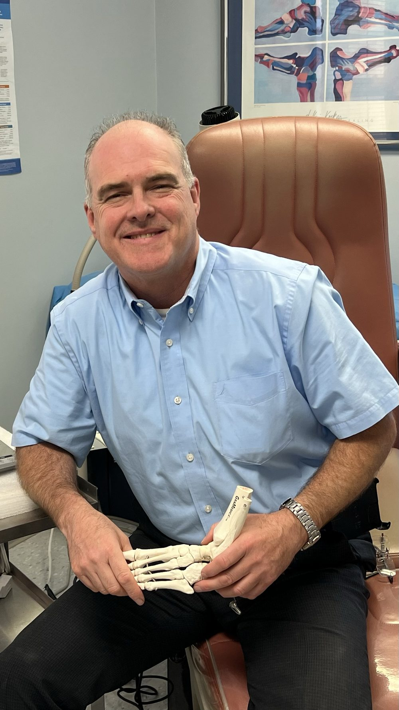

Somers
268 Route 202, Somers, NY 10589. In the Towne Centre Professional Building.
- Mon, Wed, Fri8am – 6pm
- Tuesday1pm – 6pm
- Saturday8am – 12pm
- DirectionsGoogle Maps
A Diplomate of the American Board of Podiatric Medicine, Dr. O'Hanlon treats everything from heel pain to bunion surgery, with X-ray on site, so many problems are diagnosed and treated in a single visit.
 Team podiatrist to the Yankees
Team podiatrist to the YankeesSince 2018 he has cared for the feet of the New York Yankees, and brings the same standard of care to every patient, from young athletes to grandparents.
268 Route 202, Somers, NY 10589. In the Towne Centre Professional Building.
34 Maple Ave, Armonk, NY 10504. Open Tuesdays and Thursdays.
Fill out the patient form before you arrive, and bring your insurance card and any referral your plan requires.
A podiatrist and foot surgeon who has spent more than three decades caring for Westchester families.

Dr. O'Hanlon pairs modern techniques with a patient approach. He explains what's going on, what your options are, and how to keep your feet healthy after treatment.
He has been a staff surgeon at Northern Westchester Hospital since 1991, and served as Chief of Podiatric Medicine and Surgery there for over a decade.
About Dr. O'HanlonFrom routine care to surgery, for patients of every age. Don't see your condition? We treat a wide range of foot and ankle problems.
All servicesKind words from patients of Dr. O'Hanlon.
After seeing many doctors for my son's leg pain with either a misdiagnosis or no diagnosis, Dr. O'Hanlon was spot on within seconds with regard to where the pain was, the cause of the pain, and most importantly the solution to the problem.
I believe Dr. O'Hanlon to be one of the very best podiatrists in Westchester County and a doctor that truly cares about the comfort and well-being of his patients.
He is the only doctor I trust with my feet. After all, your feet carry you everywhere.
The office staff is professional and personable. They are respectful and helpful. Making an appointment is a breeze and the staff work with your schedule. The office is super clean, organized, and well kept.
Dr. O'Hanlon's skills as a surgeon and a diagnostician are A+.
He is knowledgeable, deft, compassionate, and makes you feel like a valued patient.
Call the office closest to you. New patients are always welcome.